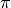

Interpolation using Radial Basis Networks¶
Different kinds of neural network use different functions as activations for some neurons. The Radial Basis Network (RBFN) uses radial basis functions (RBFs), which are functions that are symmetric according to the origin. These functions offer good local approximation for a function and, for that reason, they are especially good for interpolation and function approximation. In fact, it can be prooved that any continuous function can be approximated by this type of neural network.
In this network, the first layer contains RBFs as activation functions. Because of this, the training is done in a different way, even though a gradient approach could be used. However, it is in general better to use a clustering algorithm, such as K-Means, to find the centers of the functions, and compute the width of the functions proportionally to the greatest distance among centers. The second layer of the network is a linear weighted combiner that sums the contribution of each neuron.
In this tutorial, we will see how to use Peach’s implementation of RBFNs to interpolate a function. We start, as always, by importing the necessary modules. We will use the randrange` from the ``random module to randomize the presentation of examples to the network:
from numpy import *
import peach as p
from random import randrange
Let’s define the parameters of the simulation. We desire to interpolate a period of a cosine, from 20 samples of the function. The lines below create the training set:
x = linspace(-pi, pi, 20)
x = x.reshape((20, 1))
y = cos(x)
Next, we create the network and the corresponding algorithms. We will use a 7th-order network to make the interpolation. This must suffice, but it is expected that small errors occur, especially near the limits of the interval. We will see if this actually happens in the result:
N = 7
We will use the K-Means algorithm (implemented in the KMeans class) to clusterize the centers. Any other such algorithm (such as SOM or FuzzyCMeans) could be used. We initialize the centers with a reasonable set of values. linearly distributed through the interval. While this step is not necessary, it will guarantee that good centers are found. Upon calling the KMeans instance, we receive the clustered centers as the result:
km = p.KMeans(x, N)
km.c = linspace(-pi, pi, N)
c = km()
Here, we initialize the Radial Basis Network. Notice that we don’t need to pass a lot of parameters to the network – only the centers, here represented by c, are mandatory. The default RBF is the gaussian, and the default combiner is Linear, but we could specify different functions using phi and phi2 arguments, respectively. The learning procedure for the second layer is the BackPropagation (to take care of the situations in which phi2 is not linear) but this can be changed through the lrule argument:
rbf = p.RBFN(c)
Now, we present some examples from the training set to the network. Notice that we already know where the centers are located, and in the instantiation of the RBFN algorithm the widths of the RBFs were computed. You can access the widths through the width property. To present the examples, we first randomly select and example and feed it to the network:
i = 0
error = 1.
while i < 5000 and error > 5.e-2:
j = randrange(20)
e = rbf.feed(x[j], y[j])
i = i + 1
In the end of the training, you can inspect the weights of the second layer by using the weights property. We print them here, for reference:
print rbf.weights
We will now plot the result. We apply the RBFN in 500 points in the domain from to . To activate the network and obtain the result, we just use the __call__ interface. Notice that the result of a neural network is a two-dimension array, so we select first line, first column:
t = linspace(-pi, pi, 500)
yh = [ ]
for tj in t:
yh.append(rbf(tj)[0, 0])
By using the matplotlib, we can plot the result over this domain to see the results. We get a little distortion in the beginning and the end of the interval, but a very good approximation in the middle.